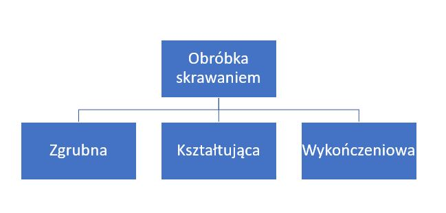
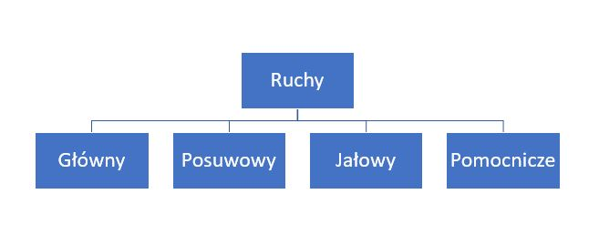

Obróbka skrawaniem dzieli się na zgrubną, kształtującą oraz wykończeniową (rysunek nr 1).

Rys. 1. Podział obróbki skrawaniem
Obróbka zgrubna
Polega na usuwaniu dużych naddatków materiału najczęściej z przedmiotów nie poddanym wcześniej obróbce skrawaniem.
Obróbka kształtująca
Polega na uzyskaniu przedmiotu będącego pod względem kształtów i wymiarów zbliżonego do przedmiotu gotowego i jest to proces, który przygotowuje przedmiot do obróbki wykończeniowej.
Obróbka wykończeniowa
Polega na nadaniu obrabianemu przedmiotowi ściśle określonych wymiarów, kształtu, powierzchni.
Parametry skrawania
Wyróżniamy dwa główne parametry w obróbce skrawaniem: kinematyczne i geometryczne.
Kinematyczne
Opisują ruchy jakie wykonuje narzędzie oraz obrabiany przedmiot.
Geometryczne
Opisują one wielkość naddatku materiału oraz wymiary warstwy skrawanej.
Rodzaje ruchów w obróbce skrawaniem
Ruchy występujące w czasie obróbki skrawaniem są nadawane urządzeniu lub przedmiotowi obrabianemu przy użyciu obrabiarki służącej do wykonania procesu kształtowania przedmiotu za pomocą obróbki skrawaniem.

Rys. 2. Rodzaje ruchów w obróbce skrawaniem
Ruch główny
Najczęściej jest to ruch obrotowy i warunkuje on istnienie procesu skrawania.
Ruch posuwowy
Ruch ten może być ciągły bądź również okresowy. Może być on prostoliniowy lub złożony i co najważniejsze jest on niezbędny w przypadku konieczności usunięcia warstwy skrawanej z całej powierzchni obrabianego przedmiotu.
Ruch jałowy
Jest to jednym z rodzajów ruchu głównego, podczas wykonywania tego ruchu nie odbywa się skrawanie przedmiotu i ten typ ruchy występuje podczas procesów takich jak: struganie, dłutowanie, przeciągnie i przecinanie. Co ważne, w przypadku, kiedy to ruch główny jest ruchem obrotowym to ruch jałowy nie występuje, przykładami obróbek bez ruchu jałowego są na przykład toczenie, frezowanie oraz wiercenie.